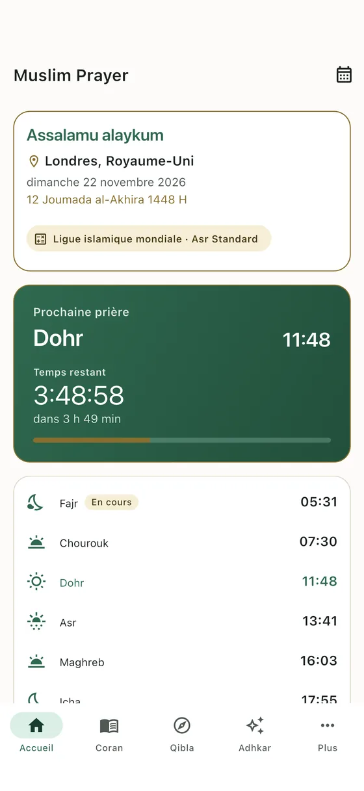

Aide et assistance
Muslim Prayer
Les heures de prière de votre ville, les rappels de l’Adhan, le Coran en arabe, la direction de la Qibla, les adhkar, le tasbih et le calendrier hégirien, dans une application sobre. Trouvez une réponse ici ou écrivez-nous.

Trouver de l’aide par thème
Ce que contient l’application
Heures de prière
Les horaires du jour avec un compte à rebours jusqu’à la prochaine prière, et un calendrier mensuel. 10 méthodes de calcul et un ajustement manuel pour chaque prière.
Notifications de l’Adhan
Pour chaque prière, choisissez l’Adhan, un son court ou le silence. Programmées sur votre appareil.
Qibla
La direction depuis la ville choisie, avec une boussole en direct sur les appareils qui en ont une.
Coran
Le texte arabe complet, lisible hors connexion, avec recherche, signets et progression de lecture.
Adhkar et tasbih
Les adhkar du matin, du soir, d’après la prière et d’autres, en arabe avec leurs références, et un compteur numérique.
Calendrier hégirien et Ramadan
Un calendrier hégirien mensuel, les heures de suhour et d’iftar, un calendrier du Ramadan et un suivi privé du jeûne.
À savoir sur les heures de prière
Les heures de prière et les dates hégiriennes sont calculées. Elles dépendent du lieu, de la méthode de calcul et des réglages que vous choisissez, et peuvent différer de votre mosquée ou de votre autorité locale de quelques minutes, ou d’un ou deux jours pour les dates hégiriennes.
En cas de différence, suivez la source en laquelle vous avez confiance. Vous pouvez ajuster chaque prière et la date hégirienne dans l’application.
Version concernée par ce site
Muslim Prayer 1.0.0 pour iPhone (iOS 15 ou version ultérieure). Gratuite, sans compte et sans publicité dans cette version. L’application est disponible en français, anglais, arabe, espagnol, italien et allemand.
Votre vie privée
La Politique de confidentialité explique ce que l’application traite et les choix dont vous disposez.
Lire la Politique de confidentialitéS’ouvre dans Google Docs, en anglais